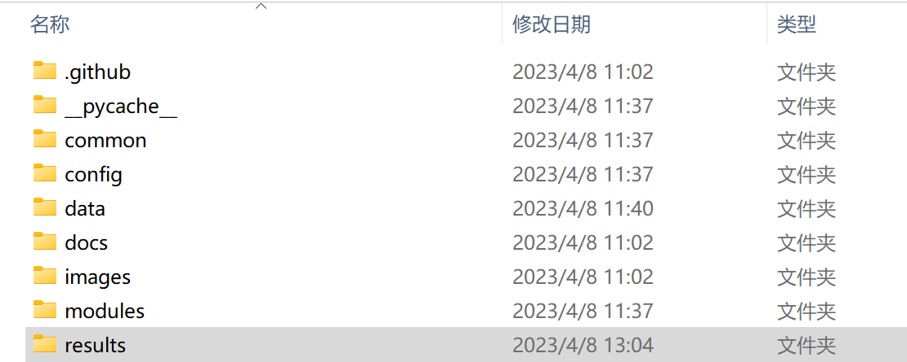

1.什么是OSINT
OSINT（Open-source Intelligence）即开源情报搜集，是用多元化方法进行搜集、分析和通过公开信息进行决策的一种方法。在情报界，Open指的是侵略性、公开的资源.
它是一种已被用于国家安全情报活动的方法，其目的是从报纸、新闻、网站和 SNS 等各种信息中预测国家和公司的政策。
此外，通过使用 OSINT 收集信息，可以检测泄露的个人信息和机密信息，因此近年来它也被用于防御网络攻击。
个人信息检查
- Have I Been Pwned
- 只需输入您的电子邮件地址即可检查您的个人信息是否已被泄露
- 并且当未来发生 pwnage 并且您的帐户被盗用时，您会收到通知。
- 还能进行域名搜索
（在整个域中搜索被盗用的帐户并接收未来的通知）
- 还会显示一些违规网站
- 还能查看密码是否安全
- 还提供了一些API(当然需要$)
好用的情报工具
1.Maltego
Maltego一款非常优秀的信息搜索工具，与其他工具相比，不仅功能强大，而且自动化水平非常高，不需要复杂的命令，就能轻松的完成信息收集。该工具可以通过域名注册，搜索引擎，社交网络，电子邮件等各种渠道搜索信息。主要用于是用于开源情报和取证的软件，可以安装在Windows，Linux，MacOS上。在Kali Linux上是默认安装的，只需要一个域名，便可对互联网上的资源自上而下的搜集。
2.UserSearch
* UserSearch是一个庞大的用户搜索平台，通过用户名或电子邮件查找某人，可搜索社交网络、约会网站、论坛、加密论坛、聊天网站和博客上。目前已经运行了超过15 年，因此开发人员在用户名或电子邮件地址的OSINT 方面拥有相当强大的地位。开发人员是一个由开源专家和软件开发人员组成的团队。该站点完全免费使用！是迄今为止最全面、最准确的用户名和电子邮件地址在线搜索引擎之一。它还有高级设置，当然也要$.
- DorkSearch
- 这是一项于2022年初创建并向社区发布的免费服务。该工具似乎是exploit-db提供的服务的一种变体，但具有更有用和更广泛的功能。Dorking 基本上是一组可以在Google中使用的半秘密搜索词。使用它们可以显示并非真正打算在Google 中出现的结果！也称为“深网”（不要与暗网/TOR混淆）。
* 开发人员基本上为Dorks创建了一个搜索页面。在下图中，您可以看到它们有一个易于点击的界面。随后它可以让你浏览你感兴趣的内容，然后你只需要点击你想要的。
- ScamSearch
- 个人诈骗者和诈骗网站的全球数据库。迄今为止，被认为OSINT 最大的社区之一。ScamSearc 是一个庞大的诈骗者众包报告数据库。涉及加密货币诈骗、电子邮件、社交网络、离线诈骗、电话诈骗，几乎所有你能想到的诈骗情况，这个网站都会记录下来并免费提供。目前有大约1000万记录在案的诈骗者，并且每周以数千人的速度增长。
他们有一个简单的搜索栏，可让在他们的数据库中搜索用户名、电子邮件、加密地址、昵称、真实姓名或网站。鉴于数据库的大小，搜索会很慢，但它是即时的。完全免费的大量诈骗份子数据！由于其众包性质，还鼓励用户使用其服务来举报诈骗者。许多OSINT研究人员和反诈骗社区使用这些数据来瞄准诈骗者并阻碍他们的诈骗工作。
- Mitaka(一个扩展程序）
- 这是浏览器中非常方便的一组工具，这可作为Chrome扩展程序使用，也可用于Firefox。它允许在十几个主要搜索引擎中搜索域、URL、IP 地址、MD5 哈希、ASN 和比特币地址。
- Spiderfoot
[下载地址]（https://github.com/smicallef/spiderfoot?ref=d）
- 这是一个免费的侦察工具，可自动查询 100 多个公共数据源 (OSINT)，以收集有关IP地址、域名、电子邮件地址、姓名等的情报信息。只需指定要调查的目标，选择要启用的模块，然后 SpiderFoot 将收集数据以了解所有实体以及它们之间的关系。扫描返回的数据将揭示有关目标的大量信息，从而深入了解可能的数据泄漏、漏洞或其他敏感信息，这些信息可在渗透测试、红队演习或威胁情报中被利用。
- 还可以在 SpiderFoot 扫描中定位以下实体：


* IP地址
* 域名/子域名
* 主机名
* 网络子网 (CIDR)
* ASN
* 电子邮件地址
* 电话号码
* 用户名
* 人名
* 比特币地址
安装
稳定构建（打包发布）：
wget https://github.com/smicallef/spiderfoot/archive/v4.0.tar.gz
tar zxvf v4.0.tar.gz
cd spiderfoot-4.0
pip install -r requirements.txt
python ./sf.py -l 127.0.0.1:5001
开发构建（克隆 git master 分支）：
git clone https://github.com/smicallef/spiderfoot.git
cd spiderfoot
pip install -r requirements.txt
python ./sf.py -l 127.0.0.1:5001
- BuiltWith
- 查找构建网站的工具！
- Builtiwth，定位于是一个网站分析工具、竞争对手情报工具和网站优化工具，可以分析网站使用了哪些技术堆栈。例如，它可以检测网站是否是使用WordPress、Joomla或任何其他类似CMS 的平台构建的。它还将生成网站当前正在使用的插件、其框架甚至是公开可用的服务器信息的服务列表。可以将此工具与安全扫描程序（例如 WPScan）和 WordPress 漏洞数据库 API 链接。这可以快速发现正在使用的 WordPress 模块中的常见漏洞。这个分析工具除开技术方面的分析，对于商业品牌而言，分析竞手方面也是不错的应用。
- OSINT Framework Resource
- OSINT 框架专注于从免费工具或资源中收集信息。目的是帮助人们找到免费的 OSINT 资源。包含的某些站点可能需要注册或以 $$$ 的价格提供更多数据，但您应该能够免费获得至少一部分可用信息。
- OneforAll
摘自
一款强大的子域收集工具- 基于python 3.6.0及以上版本,cmd中查看
pyton -V
这里我们用git来下载GIT安装
git clone https://gitee.com/shmilylty/OneForAll.git
或git clone https://github.com/shmilylty/OneForAll.git
- 安装
- 1.0cmd中输入
cd OneforAll - 2.0安装依赖
python -m pip install -U pip setuptools wheel -i https://mirrors.aliyun.com/pypi/simple/ pip3 install -r requirements.txt -i https://mirrors.aliyun.com/pypi/simple/ - 3.0更新
git stash # 暂存本地的修改 git fetch --all # 拉取项目更新 git pull # 下载覆盖 git stash pop # 释放本地修改演示
我这边是用example.com来演示的,大家可以换成其他域名python oneforall.py --target example.com run 或 python oneforall.py --targets ./example.txt run
- 1.0cmd中输入
- 运行后就是这样的了
- 之后找到OneforAll文件夹中的results
 - 打开


现在让我们开始OSNIT
- 前言:以下内容为油管Cyber Mentor老师关于OSINT相关知识的笔记，在国内部分内容不一定能够实操，但是知识点有一定的借鉴性。
- 为什么我们需要Fake identity
- 在进行OSINT的时候，我们为了不让目标发现我们正在探测他，有时候我们需要一个Fake 微信账户、Fake 求职账户、Fake Twitter账户，诸如此类。这个账户不应该绑定真实的IP信息、手机信息等个人信息。
- 如何创建Fake identity
- 可以使用AI生成的fake头像AI
- 可以使用配套的虚假信息
- 可以使用Fake的个人邮件、银行卡信息Fake 4. 可以使用VPN伪造IP Address
- Search Engine OSINT
常用搜索引擎：
谷歌:https://www.google.com
DuckDuckGo:https://duckduckgo.com/
Yandex:https://yandex.com/
- 谷歌Hack语法:
1. "A and B":包含A和B的网页
2. "site:xxx.com":xxx.com网页下的文件
3. "*" :万能替换
4. "filetype:pdf":搜索文件类型为PDF的结果
5. "-resultA":不显示resultA的搜索结果
6. "intext: resultB":显示在网页中有ResultB的结果
7. "inurl:resultC":显示在网页URL中有ResultC的结果
8. 高级搜索:https://www.google.com/advanced_search
- Reverse Picture OSINT
1. [Google图片搜索](https://images.google.com/) 2. [Yandex图片搜索](https://yandex.com/images/search) 3. [Tineye图片搜索](https://tineye.com/search) Yadex在反向图片搜素这个方面更优秀一点，可以触类旁通反馈相似的图片
Tineye搜索的结果可能和Google有所不同，可能搜索到比较隐蔽的结果
EXIF Data OSINT
可交换图像文件格式（英语：Exchangeable image file format，官方简称Exif），是专门为数码相机的照片设定的文件格式，可以记录数码照片的属性信息和拍摄数据。 通过EXIF Data，我们可以获得图片的拍摄日期、拍摄器材、甚至拍摄地点在线EXIF信息提取网站
- Real Address OSINT
1. [Google卫星地图](https://www.google.com/maps) 2. [百度地图查询](https://map.baidu.com/) 3. [地址猜测网站](https://www.geoguessr.com/) 4. [高德地图](https://www.amap.com/) * 研究一个图片反应的所在地，要注重图片细节，比如图片中的人物、汽车牌照、气象细节、建筑物、常用规则。- Email Address OSINT
1. [公司邮件查个人](https://hunter.io/) 2. [万能查询](https://phonebook.cz/)[付费,一年5000欧] 3. [精准个人查询](https://www.voilanorbert.com/) 4. [邮箱存活性验证](https://tools.emailhippo.com/) * 邮箱存活性验证技巧：尝试登录Google,如果到了输入密码那一步，说明邮箱是存在的。- Password OSINT
1. [付费数据](https://dehashed.com/)[一天5￥，但是数据很神] 2. [信息泄露查询](https://leakcheck.io/) 3. [信息泄露自查](https://haveibeenpwned.com/)- Hunting Username And Accouts
1. [用户注册检测](https://namechk.com/) 2. [注册用户检测](https://whatsmyname.app/)- Searching For People
1. [姓名电话住址查人](https://www.whitepages.com/)【美国用户信息】 2. [手机号查人](https://www.truecaller.com/)